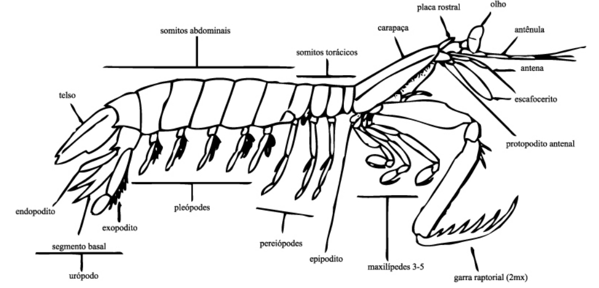
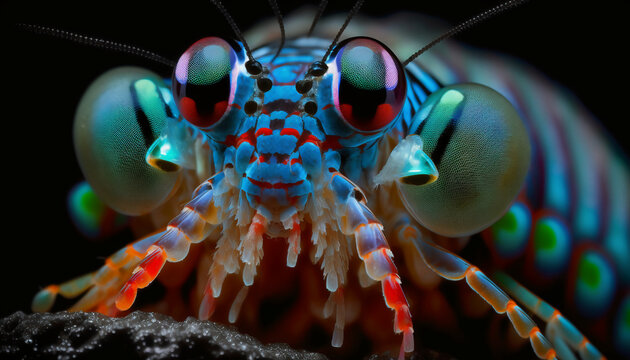
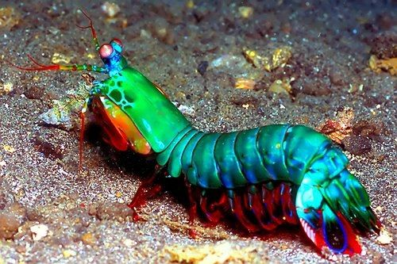

Fatos sobre o Stomatopoda
Descrição
No Brasil 🇧🇷, o Stomatopoda (ou estomatópode) são chamados popularmente de tamarutacas ou de lacraias-do-mar, é uma ordem de crustáceos marinhos da subclasse Hoplocarida, que agrupa cerca de 400 espécies, caracterizadas principalmente pela morfologia da segunda pata torácica, que é modificada em apêndice subquelado, lembrando uma pata de louva-a-deus. Seu nome científico é Odontodactylus scyllarus.

Os estomatópodes são predadores ativos que caçam presas com o auxílio de uma visão muito apurada, capaz de interpretar polarização no espectro ultravioleta e infravermelho. Apresentam uma variação grande de tamanho, que pode ir de poucos milímetros até aproximadamente 40 cm nas espécies maiores.
Eles gostam do fundo do mar, lodoso ou ainda arenoso, onde cavam seus buracos ou aproveitam-se dos orifícios deixados por outros animais para neles se instalar. São animais exclusivamente carnívoros, alimentando-se de camarões, caranguejos, moluscos, peixes e até mesmo outros da mesma ordem.
O seu segundo par de patas é muito desenvolvido e é usado tanto para atacar a presa como para se defender. O urópodo (dois pares de apêndices do último segmento abdominal dque têm a forma de lâminas móveis e podem servir para auxiliar na natação), quando aberto, também funciona para defesa, como um escudo, fechando a galeria em que o animal esteja instalado. A fêmea desova no local onde se abriga e, em caso de perigo, enrola os ovos como uma bola, prendendo-os junto ao corpo até encontrar um abrigo mais protegido.
Também conhecidas como esquilas ou lagosta-boxeadora, moram nas costas dos mares tropicais e subtropicais. Além das patas, elas apresentam uma silhueta característica, devido ao grande comprimento aparentemente de seu abdómen.
Eles podem ser encontrados em quase todo o litoral brasileiro, mas não são animais fáceis de se observar devido seus hábitos furtivos. Devem ser manuseados com muita cautela pois são animais preparados para se defender com força, caso sejam incomodados.
Conheça algumas informações biológicas:
| Reino | Animalia |
| Filo | Arthropoda |
| Subfilo | Crustacea |
| Classe | Malacostraca |
| Subclasse | Hoplocarida |
| Ordem | Stromatopoda |
Fatos interessantes sobre o Stomatopoda 📋
👀 Possuem uma super visão 👀
São capazes de ver cores invisíveis a vários outros animais, do ultravioleta ao infravermelho. Possuem o mais complexo sistema de visão de cores do mundo animal, conseguindo processar 16 cores ao todo. Enquanto nós humanos conseguimos processar somente três tipos de cores primárias (vermelho, verde e azul), esse distinto animal é capaz de enxergar 12 cores primárias porque possui 12 cones de percepção de cor. Os quatro cones restantes, lhe permite enxergar imagens multiespectrais, como a luz ultravioleta.
🥊 Animal mais forte do mundo 🥊
O Stomatopoda possui dois apêndices frontais que são usados como mecanismo de ataque: ao se deparar com uma presa, os apêndices são alavancados, provendo como resultado um soco a 80km/h, comparável a uma bala disparada por revólver de calibre 22.
Esses dois apêndices bem desenvolvidos (semelhantes a um martelo),são chamados de Porretes de Dáctilo Com essas “super patas” o animal espanca e esmaga suas presas (daí o motivo de um de seus nomes ser lagosta-boxeadora).

⚡ O Animmal mais rápido no gatilho ⚡
Além da enorme potência de seu soco, esse animal consegue movimentar seus apêndices tal qual um tiro de arma de fogo: seu golpe pode chegar a uma velocidade 720 km/h. Curiosamente, tanto a força quanto rapidez do ataque, não danificam sua estrutura corporal

Mais duro que o adamantium?
Devido a habilidades tão únicas, pesquisadores de diversas partes do planeta realizam estudos com o objetivo de entender o mecanismo da força de ataque e o motivo da resiliência do Stomatopoda quanto ao forte impacto.
